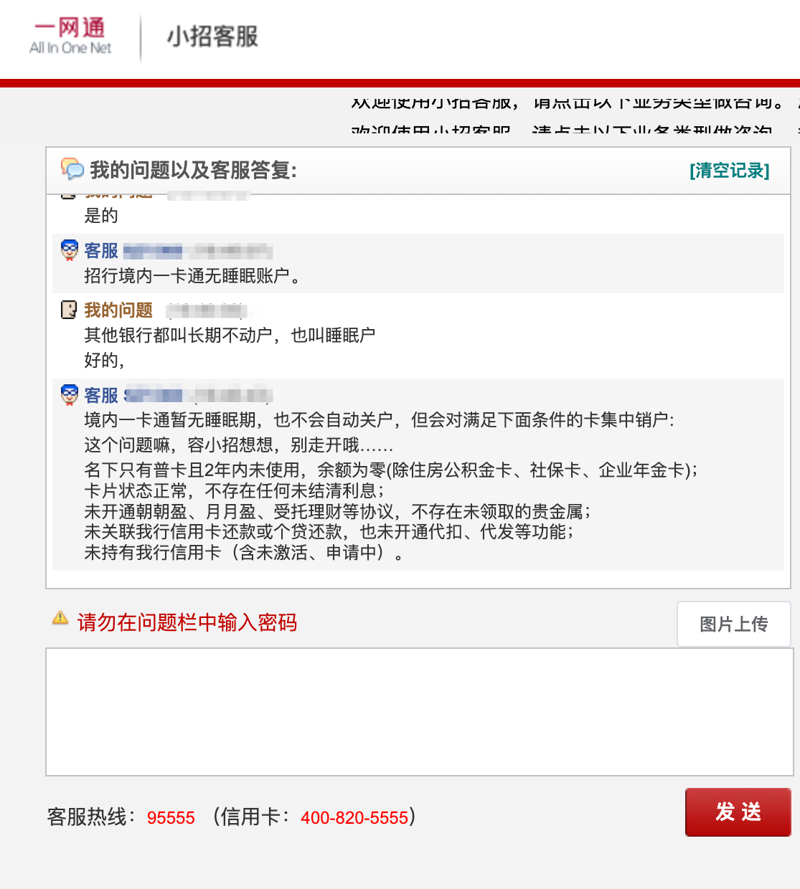

各大银行不动户 / 睡眠户的标准
凡连续三年以上（含三年）未发生客户主动交易，账户余额为零，且未签订信用卡、个人贷款还款及其他代收代付协议的账户（借记卡和活期存折，下同），其账户功能将调整为非柜面业务只收不付。
同时满足以下条件的个人借记卡账户：
- 近 180 天（含）无交易记录，且账户余额小于 500 元；
- 未持有基金、保险、理财、贵金属任一产品；
- 未建立信用卡约定还款、个人贷款还款、第三方存管任一签约关系。
三年以上（含三年）没有交易、卡主账户及子账户存款余额为零且没有其他关联业务的借记卡。社保卡、军人保障卡、退役金专用卡不列入本次清理范围。
长期不动户：近三年（含）无交易，账户余额小于等于 10 元（人民币）的账户；
凡连续三年以上（含三年）未发生动账交易（包括但不限于存取款、转账、消费、缴费等，下同），账户余额为 10 元（含）及以下，且未签订信用卡、个人贷款还款及其他代收代付协议的个人银行账户，其账户功能将自同时符合上述条件之日起调整为暂停非柜面主动出账交易。
个人活期存款账户最后一笔动账交易（包括存取款、汇入汇出、转账等主动动账交易，不包括结息、代扣利息税、司法查询、司法冻结、司法扣划和扣收小额账户管理费等非客户主动发起的动账交易，下同) 超过 3 年的；定活两便账户自起息日起满 3 年未发生业务的；整存整取定期储蓄账户（含存单）未约定转存的，到期后 3 年未发生业务的 (约定转存的不设为长期不动户）。
招商银行：
境内一卡通暂无睡眠期，也不会自动关户，但会对满足下面条件的卡集中销户:
- 名下只有普卡且2年内未使用，余额为零(除住房公积金卡、社保卡、企业年金卡)；
- 卡片状态正常，不存在任何未结清利息；
- 未开通朝朝盈、月月盈、受托理财等协议，不存在未领取的贵金属；
- 未关联我行信用卡还款或个贷还款，也未开通代扣、代发等功能；
- 未持有我行信用卡（含未激活、申请中）。
账户余额为 100 元（含）以下，无我行个人贷款还款、代销基金产品、理财产品、三方存管等签约关系且账户连续 180 天（含）以上未发生任何非结息交易的个人人民币银行结算账户（金融社保卡、公积金卡除外）。
连续一年（含）以上未发生存现、取现、转账等主动交易且账户余额为 0 的借记卡账户（含电子账户，不含社保卡）和活期一本通账户限制账户非柜面金融服务
同时满足以下条件的我行个人人民币结算账户将被限制交易：
- 账户余额低于 10 元人民币（含）以下。
- 账户连续三年（含）以上未发生任何非结息交易的个人结算账户。
- Ⅰ 类个人银行账户：连续两年以上（含两年）未发生存现、取现、转账等主动交易，资产为零且无信用卡约定还款、个人贷款还款等签约关系的 I 类个人银行账户。
- Ⅱ、Ⅲ 类个人银行账户：连续一年以上（含一年）未发生转账等主动交易，资产为零且不存在任何未结清利息的 Ⅱ、Ⅲ 类个人银行账户。
- 对 “双零”（零余额、零积数）满 5 年的个人银行结算 I、II、III 类账户，进行销户。如存在欠缴短信提醒费等费用的，不需要补交，也不会影响个人征信。对已签约理财产品、基金、第三方存管、个人贷款还款、代收代付等业务功能的账户不纳入销户范围。
- 对余额在 100 元（含）以下，三年未主动发生资金收付活动（不包括结息）的个人银行结算 I、II、III 类账户，进行暂停非柜面业务。
- 通过我行电子渠道开立的 II、III 类账户，如存在 “客户身份信息不完整或有误”、“未留存身份证影印件或复印件” 或 “未充分验证绑定银行卡” 三类情况，进行中止账户服务。
已超过五年未发生任何客户主动金融交易，人民币活期余额小于等于 100 元且账户无加挂外币子账户（含已结清）或外币子账户余额为 0、无加挂定期子账户（含已结清）或定期子账户余额为 0 的个人活期银行结算账户（不包含社保卡）分批进行销户清理。
民生银行、光大银行未查询到官方通告；
本文主要信息来源为互联网，如信息有误或过时，请 发邮件 反馈。
最近更新时间：2023/03/14